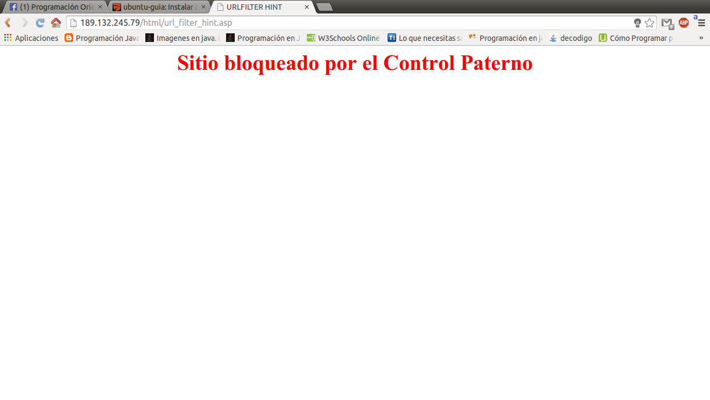

VIDEOTUTORIAL: Crea una página web utilizando XAMPP (Windows)
No olviden visitar su canal para ver sus demás vídeos
Como instalar XAMPP para Linux
La siguente página contiene información de como instalar XAMPP en la distribución
Ubuntu 13.10.Yo la he probado en Ubuntu 14.04 (la versión más reciente) y no des-
carto que se pueda utilizar en otras distribuciones de Linux. A mí me funciono así que
considero que a los que lo prueben también les funcionará. Sólo tuve el gran disgusto
que al querer ver mi página mediante mi IP como mi amigo Reynaldo muestra en su
video, sale el siguiente texto en ventana:

Estuve investigando para tratar de arreglar ese error, y no puede, lo único que
encontre es que se debe al IP que me proporciona mi compañia telefonica...Telmex
Ya que esta empresa bloquea el IP totalmente.
Instalar XAMPP en Ubuntu 13.10